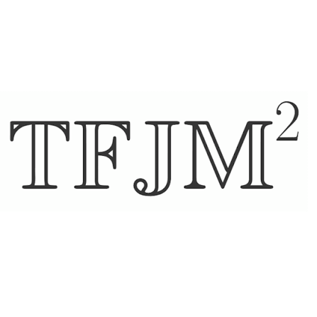
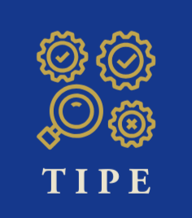

Engineering Courses
Four scientific and technical projects completed during my free time, each with a short reflection on what I learned.

TFJM²
In 2024, I took part in the TFJM² (a French mathematics research tournament) with four friends. We worked on open problems, won the regional tournament and finished 5th at the national final.
What I learned: how to reason rigorously on a problem with no known answer, defend my solution orally against other teams, and share the work inside a team.

TIPE: the Van der Pol oscillator
Many natural and engineered systems exhibit self-sustained oscillations, from the human heartbeat to electronic circuits. For my 2026 TIPE, I investigated the Van der Pol oscillator, a mathematical model introduced to describe such phenomena. Through mathematical analysis, numerical simulations and physical interpretation, I explored how a simple equation can capture complex non-linear behaviour and explain the emergence of stable oscillations.
What I learned: mathematics, simulation and physics complement each other, and even complex concepts can be made accessible through a clear and structured presentation.
Games: Minesweeper & Snake
I programmed a Minesweeper and a Snake game. The Snake game is written in C, with a working menu (Play / Options / Quit) and ideas for further improvements.
What I learned: how to structure a program, handle user input, and debug step by step.

Web development
I build websites with HTML, CSS and JavaScript: this portfolio, a website about my football club, a site of maths exercises written in LaTeX and 3 other projects.
What I learned: how to adapt an existing template, organise content clearly and fix errors one by one.